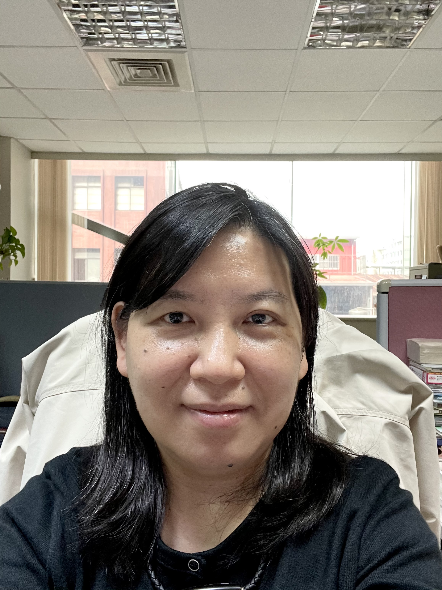

網頁 UI/UX 設計顧問
協助網站架構、版面層級、導覽流程與互動細節優化，讓內容更容易被看見與理解。
我結合數位設計、內容轉譯、使用者體驗與數據觀察，協助文化、教育與公共服務領域，打造更清楚、更具識別度，也更能被理解與使用的數位體驗。
20+
Years
UI/UX
Design
GA
Insight
AI
Strategy
Experience Map
UX
Flow
SEO
GEO
GA
Data
Core Mission
Translate complex public knowledge into elegant, usable and trusted digital experience.
我是李逸萍，現任康百企業有限公司互動網路多媒體部企劃設計指導，擁有二十年以上數位內容、互動多媒體、網站企劃與視覺設計指導經驗。從早期互動式多媒體光碟、教育學習軟體，到文化主題網站、博物館導覽系統與行動應用服務，我長期投入數位設計與內容轉譯工作。
我的專長不只在於把畫面做得美，而是能將複雜的知識、文化脈絡、服務流程與使用者需求，重新整理為清楚、具吸引力且易於操作的數位介面。這讓我在文化、教育、公共服務與博物館導覽等專案中，能同時兼顧內容深度、視覺識別、操作動線與實際執行可行性。
職涯早期曾任艾德高科技股份有限公司、昺揚資訊與甲尚科技股份有限公司等單位之美術設計與藝術指導，累積紮實的視覺設計、介面規劃與多媒體製作能力。近年則更聚焦於公共文化、文學、地方知識與教育服務的數位呈現，並結合 Google Analytics 數據觀察，將使用者行為回饋到網站內容與介面優化。
面對 AI 時代，我將 AI 視為提升內容規劃、設計判斷與使用者分析的輔助能力，持續以專業企劃、創新設計與穩健執行力，協助組織打造更具辨識度、信任感與影響力的數位體驗。

About Me
數位內容企劃・互動設計指導
Brand Profile
企劃設計指導 / 多媒體設計顧問
20+
Years Experience
UI/UX
& Multimedia
Culture
Education / Public Service
Data
Informed Design
Design Principle
讓資訊被理解，讓介面被信任，讓每一次互動都回到人的需求。
從使用者需求、內容架構、操作動線與視覺風格切入，提供兼具美感、易用性與執行可行性的設計建議，協助品牌、機關與文化教育單位建立清楚一致的數位體驗。
協助網站架構、版面層級、導覽流程與互動細節優化，讓內容更容易被看見與理解。
規劃行動介面的視覺節奏、元件一致性與操作可讀性，建立穩定且精緻的使用體驗。
針對展館、文化空間與導覽情境，設計清楚、沉浸且便於操作的多媒體介面。
建立品牌視覺方向、識別一致性與應用原則，讓數位服務具備更清楚的辨識度。
釐清版面語氣、色彩系統、字體層級與影像風格，讓網站視覺更成熟、穩定。
從版面、易讀性、互動一致性與品牌感進行診斷，提出具體可執行的改善建議。
AI 在這裡不是炫技，而是協助梳理內容、發現問題、建立策略與加速設計決策的工具。真正的核心，仍是對使用者、內容脈絡與服務目標的理解。
Design Method
01
以 AI 輔助內容架構、標題層級、FAQ、SEO/GEO 內容策略規劃，讓資訊更容易被搜尋、理解與引用。
02
結合 Google Analytics 觀察使用者行為，優化網站動線、內容呈現、到達頁與互動流程。
03
針對網站、APP、多媒體導覽系統進行視覺與體驗評鑑，提出清楚可執行的改善方向。
04
將文化、教育、公共服務內容轉譯為清楚、可理解且具吸引力的數位介面。
作品涵蓋教育學習軟體、文化主題網站、博物館導覽系統、APP 視覺設計與文學地方知識平台。
以互動設計提升語言學習內容的可用性與參與感。
榮獲教育部第二屆金學獎第一名，展現教育內容數位化的早期創新成果。
將影像、導覽與互動結構整合為具敘事感的數位內容作品。
將地方文化資產轉化為可瀏覽、可學習、可延伸探索的網站體驗。
以細緻視覺與內容架構呈現文化記憶、工藝脈絡與情感敘事。
整合網站資訊與展場導覽需求，建立一致且易操作的數位服務體驗。
以行動情境重新組織展覽內容，提升探索與導覽的連續性。
讓文學知識、人物脈絡與資料內容更適合數位閱讀與查找。
將文學、地景與行動閱讀連結，建立具探索感的數位體驗。
從 AI 內容策略、公共文化網站 UX、Google Analytics 到多媒體導覽設計，整理可被實務應用的設計觀點。
這裡展示我常用的社群與開源連結，方便您快速找到 LINE、Facebook、LinkedIn、GitHub 的資源入口。
Consultation
如果你正在規劃網站改版、APP 視覺設計、多媒體導覽系統，或希望讓文化、教育與公共服務內容被更清楚地理解，我可以協助你從內容架構、視覺風格、使用者體驗與數據觀察中，找到更精準的設計方向。
企劃設計指導 / 多媒體設計顧問
歡迎針對網站改版、公共文化內容轉譯、APP 視覺設計、多媒體導覽系統與數據導向介面優化進行初步諮詢。
核心產品與技術解決方案
填寫需求表單
為了讓需求更完整、溝通更精準，請透過下方按鈕前往 Google Form 填寫專案細節。
前往 Google 表單 Status: Fill out request form